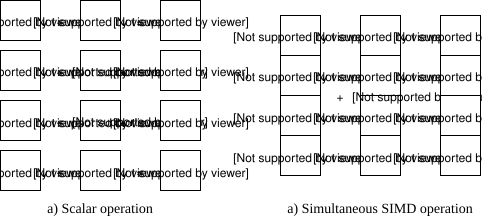

Modern CPU architecture consists of dozens of registers and register sets, each having it's own important puprose. I'd say that a big majority of registers that modern architecture have isn't even documented, and unless they're documented officially by the manufacturer, it is very hard or sometimes impossible to debug or analyze these registers even for the best-skilled reverseengineers.
In this short article I'd like to cover some of the most used and best documented registers that serve very important role in today's modern computing.
Single instruction, multiple data is a type of parralel processing that supports parralel computation. The computation is divided into different units, each performing the exact same task. This can greatly improve performace, especially when doing the same computation for many different objects.
The classic example of this type of computing would be changing the brightness of a monitor, where every RGB value of every pixel has to be incremented by some same amount. Other typical applications are sound or image encoding, graphics processing or signal processing.
